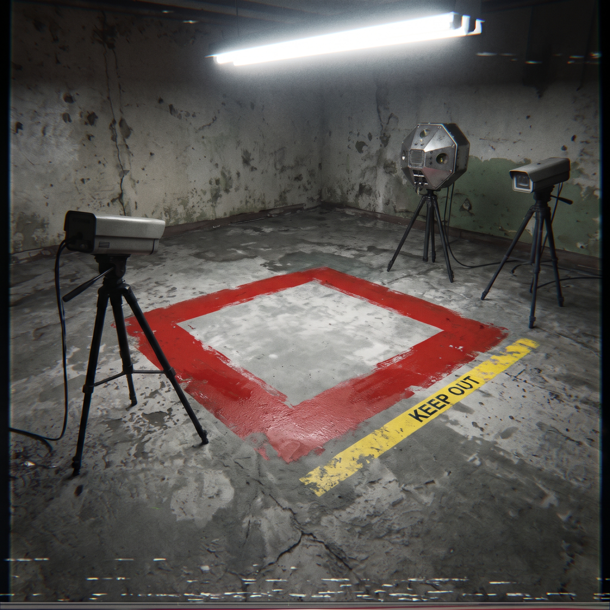

FILE / O-EXM-377 · EXTRADIMENSIONAL MATRIX
O-EXM-377「可燃區域」
Flammable Area · 觀測型（Observation）· 界外矩陣（Extradimensional Matrix / EXM）· 完全公開（Transparent）
項目標號： O-EXM-377「可燃區域」(Flammable Area)

- O.P.C.U類型
- 觀測型（O）· Observation
- 管理物質標籤
- 界外矩陣（EXM）· Extradimensional Matrix
- 管理措施
-
所有已確認之 O-EXM-377 發生事件均須以「機械式監控矩陣」進行全天候視訊監控。異常作用範圍的地表邊界必須以耐高溫之紅色工業標記漆明確標示，以防止非預期之人為接觸。
監控紀錄需每 72 小時交付常駐當地之專職審查人員（CTA 相關編制人員）進行週期性核查。任何因研究、民用或工業目的之調用請求，必須向區域主管機關提交正式申請；任何未經授權之接觸或濫用行為，將依《異常事件正當使用管理法》移送法辦並處以行政裁罰。
- 項目描述
-
O-EXM-377 為數處散布於全球特定地理坐標的異常空間區域，其生成機制及內部物理運作原理目前尚未完全明朗。
單一發生區域多呈現規則正方形幾何平面，面積普遍不超過 1.65 平方公尺（約半坪）。記錄顯示，受影響的地表基質絕大多數由常規矽酸鹽水泥或混凝土構成，且未表現出異常的材料劣化現象。
當任意實體物質進入 O-EXM-377 作用界線內時，將觸發加熱效應，使物質在 3.0 秒內迅速跨越自身燃點，並持續被注入熱能。
在其中，物質的溫度上限受其自身的物質相變點約束，持續升溫不會超過該材料在常壓下的熔點，因此不會發生結構崩解導致的液化。
當受影響物質被移出作用區域後，熱能注入即刻中止，但物質自身已引發的自持性物理燃燒仍將持續進行，直至反應消耗殆盡。
熱力學檢測顯示，O-EXM-377 引發的燃燒現象缺乏典型的化學氧化還原反應特徵，經研判為異常外部熱源誘發的純粹物理性自發升溫。
備忘錄
FROM · CTA
鑒於近期多次接獲地方通報，有授權人員與未授權人員嘗試利用該區域的特性進行烹飪行為，即日起針對所有獲批之使用申請強制增設單次接觸時限。
同時，在收容與管理周界內嚴格禁止攜帶任何肉類、烤網、鋁箔包裝及相關野炊器材。此項禁令非屬安全冗餘，請徹底執行。
- 是否為受管束事件
- 否